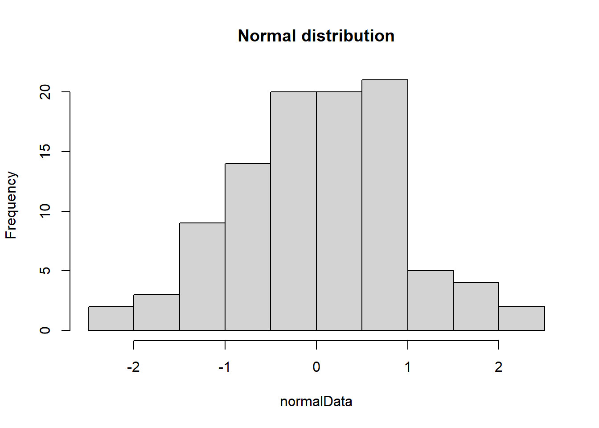
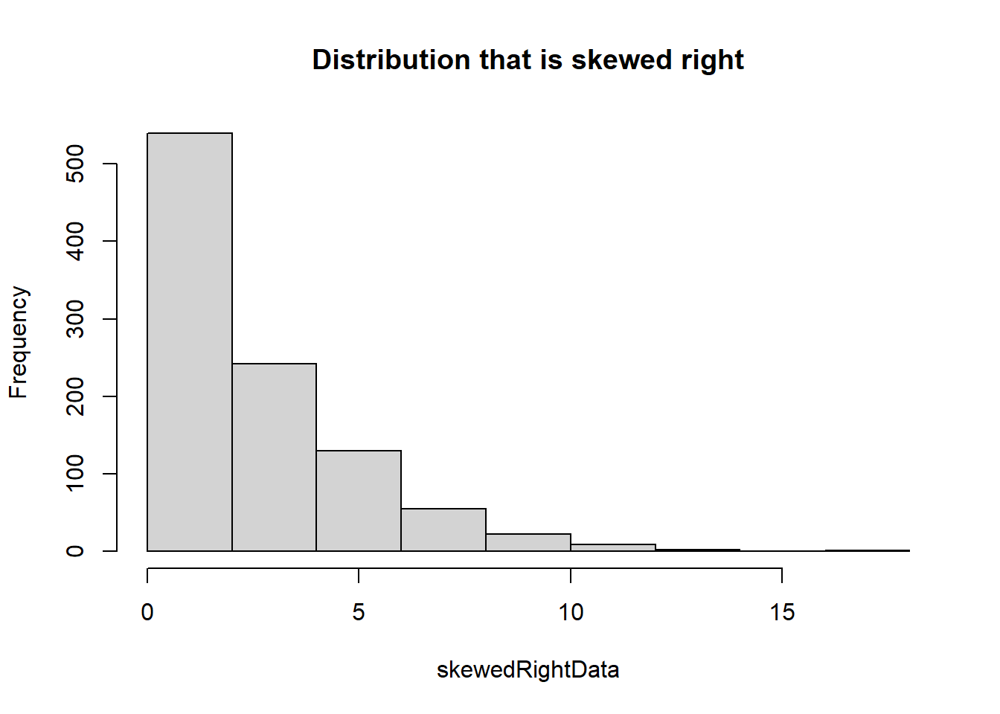
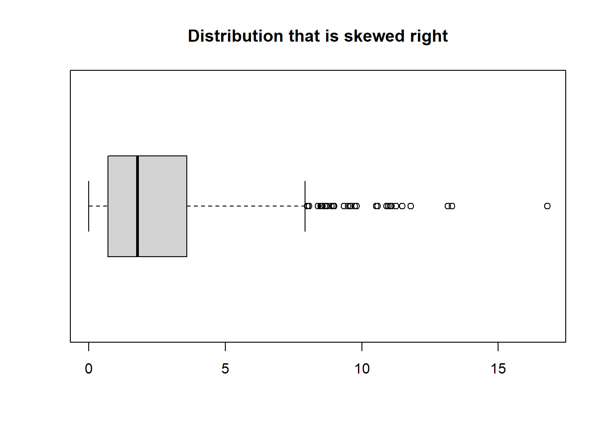
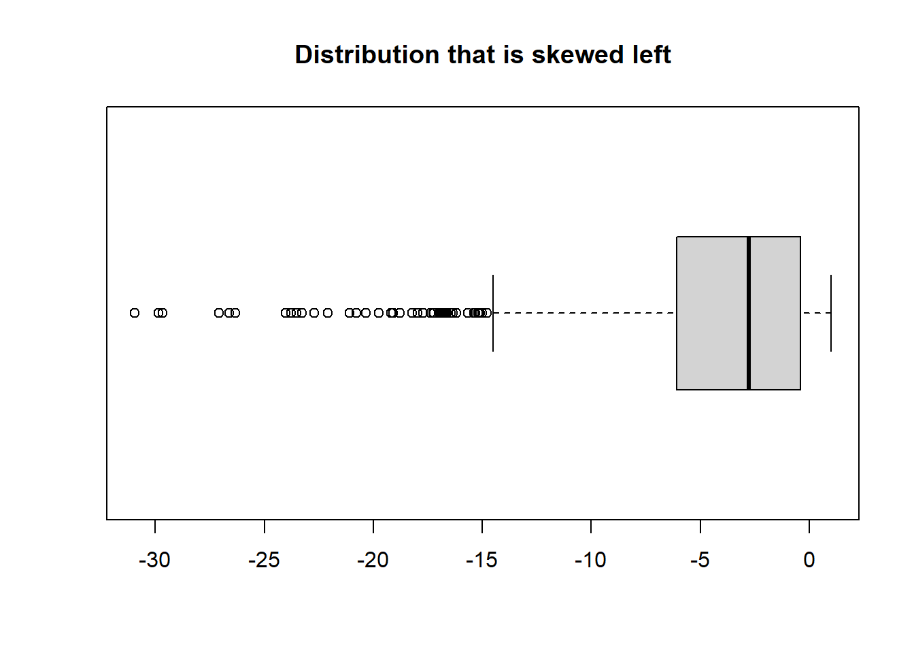
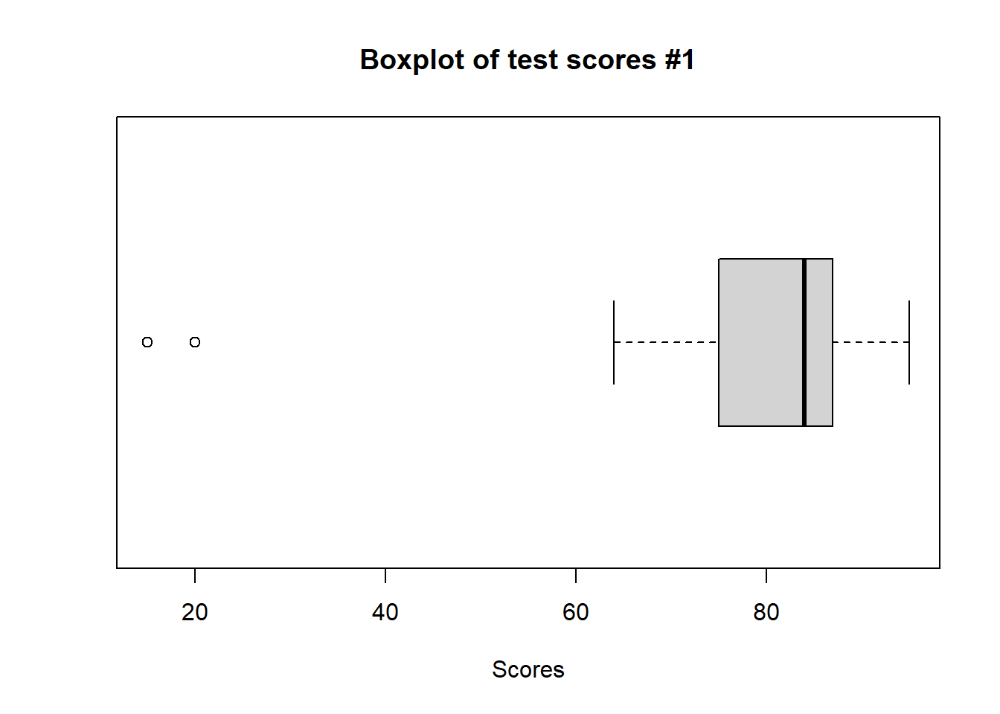

Measures of center, such as the mean and median, provide a central value that summarizes a dataset, helping to understand its typical or central tendency, which is crucial for making data-driven decisions and drawing inferences.
3.1.1 Mean
The mean, also known as the average, is a measure of center in a dataset that calculates the sum of all values divided by the total number of values, providing a representative value for the dataset. We will employ the R command mean() to calculate the mean of several datasets. First, let’s use the test scores from Section 2.1.1 which should be stored in scores.
Code
# Load test data into a variable names scoresscores <-c(95, 90, 85, 85, 87, 74, 75, 64, 85, 84, 87, 15, 20, 75, 75, 90, 75)# Calculate mean of scores and then store it in the variable meanScoremeanScore <-mean(scores)# print out the answercat("Mean test score is: ", meanScore, "\n")
Mean test score is: 74.17647
The mean is very sensitive to outliers. Let’s see what happens when we take the same scores list and add some really low grades to the list.
Code
# Previous test scores with a several much lower scores addedscores2 <-c(95, 90, 85, 85, 87, 74, 75, 64, 85, 84, 87, 15, 20, 75, 75, 90, 75, 2, 1, 5, 3)# Calculate mean of scores2 and then store it in the variable meanScore2meanScore2 <-mean(scores2)# print out the answercat("Mean test score is from original is: ", meanScore, ", while from scores2 is: ", meanScore2)
Mean test score is from original is: 74.17647 , while from scores2 is: 60.57143
This sensitivity to outliers is the notion of resistance. The mean is not a resistant measure of middle.
3.1.2 Median
The median is a measure of center in a dataset that represents the middle value when all values are ordered, and it is resistant to extreme outliers, making it a robust statistic for summarizing data. Let’s return to the scores data and see the difference between mean and median of the two datasets scores and scores2 using the R commands median().
Code
# Calculate median of scores and then store it in the variable medianScoremedianScore <-median(scores)# Calculate median of scores2 and then store it in the variable medianScore2medianScore2 <-median(scores2)# print out the answercat("Mean test score from original is: ", meanScore, ", while from scores2 is: ", meanScore2, "\n\n")
Mean test score from original is: 74.17647 , while from scores2 is: 60.57143
Code
cat("Median test score from original is: ", medianScore, ", while from scores2 is: ", medianScore2, "\n")
Median test score from original is: 84 , while from scores2 is: 75
3.1.3 Mode
The mode is a statistical measure that represents the value or values that occur most frequently in a dataset, making it a useful indicator of the most common observation(s); however, it is not necessarily resistant to outliers, meaning extreme values can heavily influence the mode. There is no bulit-in R command for mode, so we will have to employ the package DescTools.
The first time you run this code, you will need to install the following package. After this initial run, you can skip running this code:
Code
# Installs the package 'DescTools'. ONLY RUN THIS CODE ONCE!install.packages('DescTools')
Once this package is installed, then we can load the library DescTools in order to use the R command Mode().
Code
# Load the DescTools packagelibrary(DescTools)
Warning: package 'DescTools' was built under R version 4.2.3
Code
# Calculate the mode of both scores and scores2 using the Mode() method# Calculate Mode of scores and then store it in the variable modeScoremodeScore <-Mode(scores)# Calculate median of scores2 and then store it in the variable modeScore2modeScore2 <-Mode(scores2)# print out the answercat("Mode test score from original is: ", modeScore, ", while from scores2 is: ", modeScore2, "\n")
Mode test score from original is: 75 , while from scores2 is: 75
3.1.4 Midrange
The midrange is a measure of center in a dataset that represents the arithmetic mean of the maximum and minimum values, and it is not resistant to extreme outliers, making it sensitive to extreme values. There is no built-in R command for midrange, thus we will use the following code to calculate the midrange of our scores and scores2 data.
Code
# Calculate miderange of scores and then store it in the variable midrangeScoremidrangeScore <- (max(scores) -min(scores)) /2# Calculate midrange of scores2 and then store it in the variable midrangeScore2midrangeScore2 <- (max(scores2) -min(scores2)) /2# print out the answercat("Midrange test score from original is: ", midrangeScore, ", while from scores2 is: ", midrangeScore2, "\n")
Midrange test score from original is: 40 , while from scores2 is: 47
3.1.5 Let’s put it all togeher!
Consider the built-in dataset mtcars which contains several aspects and performance of several 1973 - 1974 model cars which we studied in Section 2.4. We will calculate mean, meidan, mode, and midrange of the miles per gallon of tthe cars in the dataset. using the R commands illustrated in the previous sections, as well as compute the so-called 5-number summary using the R command summary(). First, let’s plot a histogram of the data.
Code
# Extract the MPG data and store it into the variable carsMPGcarsMPG <- mtcars$mpg# Generate a histogram of the MPG data from mtcarshist(carsMPG, main ="MPG for cars", xlab ="MPG")
Code
# Calculate mean of MPG data and then store it in the variable meanMPGmeanMPG <-round(mean(carsMPG), digits =2)# Calculate median of MPG data and then store it in the variable medianMPGmedianMPG <-median(carsMPG)# Calculate Mode of scores and then store it in the variable modeMPGmodeMPG <-Mode(carsMPG)# Calculate miderange of scores and then store it in the variable midrangeMPGmidrangeMPG <- (max(carsMPG) -min(carsMPG)) /2# print out the answercat("Mean \t Median \t\t\t Mode \t\t\t Midrange \n")
# Give the 5-number summary for MPG datacat("5-Number Summary \n")
5-Number Summary
Code
summary(carsMPG)
Min. 1st Qu. Median Mean 3rd Qu. Max.
10.40 15.43 19.20 20.09 22.80 33.90
Notice that there are 7 elements in the mode. That’s because there are 7 most frequent elements, each which appear twice. Which of these central measures best describes what you visually see as the “center” of data using the histogram? What does it “mean” that the mean and median are close to each other? Does the 5-number summary give us any additional information regarding the measure of “center” in the data?
3.2 Measures of variation
Measures of variation, such as the range, variance, and standard deviation, provide insights into the spread or dispersion of data points within a dataset, helping us understand how much individual values deviate from the central tendency measures like the mean or median. These measures are essential because they quantify the degree of variability in data, allowing us to assess data quality, make more accurate predictions, and draw meaningful conclusions in statistical analysis.
3.2.1 Visualizing variation
Histograms can visually represent the variation in a dataset by displaying the distribution of values across different bins or intervals, highlighting the frequency and pattern of data points, and revealing the shape and spread of the distribution. Let’s compare histograms for our scores2 and carsMPG datasets.
Code
# Generate a histogram of the MPG data from scores2hist(scores2, main ="Test scores", xlab ="Score")
Code
# Generate a histogram of the MPG data from mtcarshist(carsMPG, main ="MPG for cars", xlab ="MPG")
3.2.2 Range
The range is a measure of variation that represents the difference between the maximum and minimum values in a dataset, but it is not resistant to outliers, meaning extreme values can substantially affect the range. Let’s compare the ranges of our carsMPG and scores2 datasets using the R command range().
Code
# Calculate range of scores2 and then store it in the variable rangeScore2rangeScore2 <-range(scores2)# Calculate range of carsMPG and then store it in the variable rangeMPGrangeMPG <-range(carsMPG)# print out the answercat("Range for test scores from scores2 is: (", rangeScore2[1], ", ",rangeScore2[2], ") \n")
Range for test scores from scores2 is: ( 1 , 95 )
Code
cat("Range for MPG from carsMPG is: (", rangeMPG[1], ", ", rangeMPG[2], ") \n")
Range for MPG from carsMPG is: ( 10.4 , 33.9 )
3.2.3 Standard deviation
Standard deviation is a measure of the dispersion or spread of data points in a dataset, with a higher value indicating greater variability, and it’s calculated differently for populations (\sigma) and samples (s), where the sample standard deviation (s) is often used for practical data analysis. However, standard deviation is not resistant to extreme outliers, making it sensitive to the influence of extreme values on its magnitude. There is a built-in R command for sample standard deviation, but no such command for population standard deviation. Recall our test scores dataset scores2. Since this data represents the entire population (every student in the class), we will calculate population standard deviation for that dataset. However, the MPG data in carsMPG is only a sample of all the cars on the market in 1973 - 1974. Thus, we will employ the R command sd() to calculate sample standard deviation.
Code
# Calculate population SD of scores2 and then store it in the variable popSDScore2popSDScore2 <-sqrt(var(scores2) * (length(scores2) -1) /length(scores2))# Calculate sample SD of carsMPG and then store it in the variable samSDMPGsamSDMPG <-sd(carsMPG)# Print out the answercat("Population standard deviation for test scores from scores2 is: ", popSDScore2, "\n\n")
Population standard deviation for test scores from scores2 is: 34.35331
Code
cat("Sample standard deviation for MPG from carsMPG is: ", samSDMPG, " \n")
Sample standard deviation for MPG from carsMPG is: 6.026948
3.2.4 Variance
Variance measures the average of the squared differences between each data point and the mean of a dataset, providing a measure of data dispersion, but it is not resistant to extreme outliers, making it sensitive to the influence of extreme values on its magnitude. Variance is calculated differently for populations (\sigma^2) and samples (s^2), with the sample variance (s^2) being used for practical data analysis to account for bias when working with a subset of a larger population. Let’s compare population variance for our scores2 dataset and sample variance for our carsMPG dataset. As with standard deviation, although there is a built-in R command for sample variance, there is not a built-in command for population variance, so we will have to improvise.
Code
# Calculate population variance of scores2 and then store it in the variable popVarScore2popVarScore2 <-var(scores2) * (length(scores2) -1) /length(scores2)# Calculate sample variance of carsMPG and then store it in the variable samSDMPGsamVarMPG <-var(carsMPG)# Print out the answercat("Population variance for test scores from scores2 is: ", popVarScore2, "\n\n")
Population variance for test scores from scores2 is: 1180.15
Code
cat("Sample variance for MPG from carsMPG is: ", samVarMPG, " \n")
Sample variance for MPG from carsMPG is: 36.3241
3.2.5 Let’s put it all togeher!
Consider the built-in dataset mtcars which contains several aspects and performance of several 1973 - 1974 model cars which we studied in Section 2.4. We will first calculate mean and median of the horse power (HP) of the cars in the dataset. To calculate measures of variation, we note that since this is just a sample of all possible cars on the market during 1973 - 1974, we will employ sample variance and standard deviation using the R commands illustrated in the previous sections, along with a histogram to visually explore the data.
Code
# Extract the HP data and store it into the variable carsHPcarsHP <- mtcars$hp# Generate a histogram of the HP data from mtcarshist(carsHP, main ="Horse power (HP) for cars", xlab ="HP")
Code
# Calculate mean of HP data and then store it in the variable meanHPmeanHP <-round(mean(carsHP), digits =2)# Calculate median of HP data and then store it in the variable medianHPmedianHP <-median(carsHP)# Calculate variance of HP data and then store it in the variable varHPvarHP <-var(carsHP)# Calculate standard deviation of HP and then store it in the variable midrangeHPsdHP <-sd(carsHP)# print out the answercat("Mean \t Median \t variance \t Standard Deviation \n")
Now, compare the MPG and HP data from the mtcars dataset. For MPG, we calculated a standard deviation around 36 and for HP of around 69. Does this mean that the MPG data is less spread out that the HP data? Is your answer to this question consistent with the histograms we produced? Can we compare standard deviations from two totally different datasets in a meaningful way?
3.3 Measures of relative standing and boxplots
Measures of relative standing, such as percentiles and quartiles, provide information about where specific data points fall within a dataset, offering insights into the relative position of values. Boxplots are graphical representations that display the distribution of data, highlighting the median, quartiles, and potential outliers, making them valuable tools for comparing different datasets by visually assessing their central tendency, spread, and skewness.
3.3.1 z-Scores
Z-scores, also known as standard scores, standardize individual data points by expressing how many standard deviations they are from the mean, enabling meaningful comparisons and assessments of data points’ relative positions within a distribution, regardless of the original scale of the data. Z-scores are valuable for identifying outliers, understanding data distributions, and making statistical inferences, as they provide a common framework for measuring deviations from the mean across different datasets. Let’s explore z-scores using the built-in dataset mtcars which contains several aspects and performance of several 1973 - 1974 model cars which we studied in the last section. Particularly, let’s employ the built-in R command scale() to convert our dataset to z-scores which can be plotted in a histogram. Once the two datasets (MPG and HP) are normalized, we will be able to get a better picture of their spread away from the respective means.
Code
# Transform the MPG data to z-scores and store the new data in zcarsHPzcarsHP <-scale(carsHP)# Transform the MPG data to z-scores and store the new data in zcarsHPzcarsMPG <-scale(carsMPG)# Generate a histogram of the transformed HP data from mtcarshist(zcarsHP, main ="Normalized horse power (HP) for cars", xlab ="Z-score")
Code
# Generate a histogram of the transformed MPG data from mtcarshist(zcarsMPG, main ="Normalized miles per gallon (MPG) for cars", xlab ="Z-score")
Visually, the normalized MPG data is more concentrated around the transformed mean of 0, while the HP data is much more spread out.
Any data point that has a z-score of less than -2 or higher than 2 is considered to be significantly lower or higher, respectively. Let’s view our transformed data sets MPG and HP to identify data points that are significantly higher.
Code
# Find MPG data points with z-scores higher than 2outliersMPG <- carsMPG[zcarsMPG >2]# Find HP data points with z-scores higher than 2outliersHP <- carsHP[zcarsHP >2]# Print the data points with z-scores higher than 2cat("MPG Data with z-scores higher than 2:", outliersMPG, "\n")
MPG Data with z-scores higher than 2: 32.4 33.9
Code
cat("HP Data with z-scores higher than 2:", outliersHP, "\n")
HP Data with z-scores higher than 2: 335
3.3.2 Percentiles
Percentiles are statistical measures that divide a dataset into 100 equal parts, helping identify values below which a certain percentage of the data falls and enabling comparisons of data points in a ranked order. Let’s use the built-in R command quantile()with the MPG data from the previous example to compute the 10th, 50th, and 90th percentiles for that dataset.
Code
# Compute 10th, 50th, and 90th percentiles for the MPG datasetpercentiles <-c(0.1, 0.5, 0.9)percentilesMPG <-quantile(carsMPG, probs = percentiles)# Print the data points with z-scores higher than 2percentilesMPG
10% 50% 90%
14.34 19.20 30.09
Notice that both of our significantly larger MPG values (i.e., 32.4 and 33.9) both fall above the 90th percentile of the dataset.
3.3.3 Quartiles & the 5-number summary
Quartiles are statistical measures that divide a dataset into four equal parts, with three quartiles (Q1, Q2, Q3) providing insights into the data’s spread and central tendencies; they are resistant to outliers, making them robust tools for summarizing data. The 5-number summary is a set of five statistics (minimum, Q1, median, Q3, maximum) that provide a concise description of a dataset’s central tendencies and spread. Keeping with our MPG dataset, we will employ the R command summary() to give the 5-number summary (which will include Q1, Q2 (also known as the median), & Q3).
Code
# Compute 5-number summary for MPG data and store it in fiveMPGfiveMPG <-summary(carsMPG)# Display the 5-number summaryfiveMPG
Min. 1st Qu. Median Mean 3rd Qu. Max.
10.40 15.43 19.20 20.09 22.80 33.90
3.3.4 Boxplot
A boxplot, also known as a box-and-whisker plot, is a graphical representation of the five-number summary, displaying the median, quartiles, and potential outliers in a dataset, making it a valuable tool for visualizing the distribution and spread of data. We will employ the R command boxplot() to compare the MPG and HP datasets from previous examples. This R command actually creates a modified boxplot by default. Recall the only difference between a regular boxplot and a modified box plot is that data which falls outside of the interquartile range is denoted as an outlier and plotted as an individual point on the graph.
Code
# Generate boxplot for MPGboxplot(carsMPG, main ="Boxplot of MPG", horizontal =TRUE, xlab ="MPG")
Code
# Generate boxplot for HPboxplot(carsHP, main ="Boxplot of HP", horizontal =TRUE, xlab ="HP")
Let’s also compare the boxplots of each of the four datasets for which we explored normal, skewed right, skewed left, and uniform distributions.
Code
# Create histogram/boxplot of normal data# Sample normal distributionnormalData <-rnorm(100)# par(mfrow = c(2,1))hist(normalData, main ="Normal distribution")

Code
boxplot(normalData, main ="Normal Distribution", horizontal =TRUE)
Code
# Create histogram/boxplot of uniform data# Sample uniform distribution using the command runifuniformData <-runif(50000, min =10, max =11)# par(mfrow = c(2,1))hist(uniformData, main ="Uniform distribution")
Code
boxplot(uniformData, main ="Uniform Distribution", horizontal =TRUE)
Code
# Sample of a distribution that is skewed rightskewedRightData <-rexp(1000, 0.4)# Create histogram/boxplot of skewed right data# par(mfrow = c(2,1))hist(skewedRightData, main ="Distribution that is skewed right")

Code
boxplot(skewedRightData, main ="Distribution that is skewed right", horizontal =TRUE)

Code
# Sample of a distribution that is skewed leftskewedLeftData <-1-rexp(1000, 0.2)# Create histogram/boxplot of skewed left data# par(mfrow = c(2,1))hist(skewedLeftData, main ="Distribution that is skewed left")
Code
boxplot(skewedLeftData, main ="Distribution that is skewed left", horizontal =TRUE)

Notice there are a lot of outliers shown on the skewed left & right data. These points are what is causing the long tails on both histograms.
3.3.5 Let’s put it all together!
We will use everything we have learned so far in this section to explore the differences between our two test score datasets, i.e., scores and scores2. These are fictional collections of test scores with scores2 containing several more extremely low test scores than scores. Our first task is to transform the datasets to z-scores and visualize the scaled datasets with a histrogram.
Code
# Transform the scores data to z-scores and store the new data in zscoreszscores <-scale(scores)# Transform the scorres2 data to z-scores and store the new data in zscores2zscores2 <-scale(scores2)# Generate a histogram of the transformed from scoreshist(zscores, main ="Normalized test scores #1", xlab ="Z-score")
Code
# Generate a histogram of the transformed from scores2hist(zscores2, main ="Normalized test scores #2", xlab ="Z-score")
Out of the two fictional classes, are there any test scores that are significantly high or low? What can we conclude about those scores? Now, let’s compute the 5-number summary for each group of test scores.
Code
# Compute 5-number summary for scorescat("scores: \n\n")
scores:
Code
summary(scores)
Min. 1st Qu. Median Mean 3rd Qu. Max.
15.00 75.00 84.00 74.18 87.00 95.00
Code
# Compute 5-number summary for scores2cat("\nscores2: \n\n")
scores2:
Code
summary(scores2)
Min. 1st Qu. Median Mean 3rd Qu. Max.
1.00 20.00 75.00 60.57 85.00 95.00
Finally, let’s create boxplots for both datasets and show them on the same plot window for comparison.
Code
# Generate boxplot for both# par(mfrow = c(2,1))boxplot(scores, main ="Boxplot of test scores #1", horizontal =TRUE, xlab ="Scores")

Code
boxplot(scores2, main ="Boxplot of test scores #2", horizontal =TRUE, xlab ="Scores")
What conclusions can we draw regarding the two datasets? If these were two real classes, how would the boxplots help the teacher understand grade performance for the entire class?